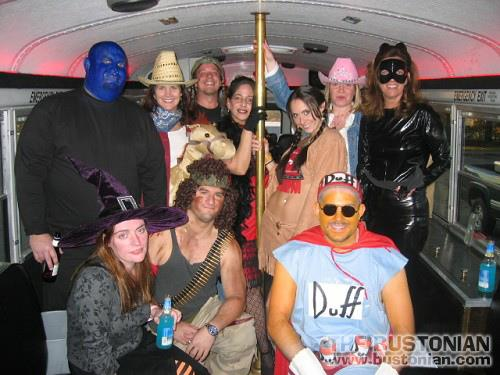

Riding the bus on Halloween can be fun because people often dress in imaginative costumes, bus drivers and passengers alike. Whether originally intended to celebrate the fall harvest before the fallow period sets in, or rather to party the day before honoring the dead, Halloween is a reminder that life is a balance of bounty and scarcity, beginnings and endings, joys and
sorrows. And that we celebrate it with other people. Were Madisons transportation situation as balanced and community-oriented.
That is the challenge.
Because continuing to ride the bus in the last 50 years, when Madison has expanded in a skewed, car-centric, and unsustainable fashion is challenging, and has left a lot of people behind. Madison now sprawls across more than 77 square miles, more than twice its land area in 1970, even as the Citys population only grew by less than a fifth during that time. In 1970, Madison had roughly 58 percent of Dane Countys population. Today, its population is less than half that of the County. And this sprawl is still condoned in the mistaken belief that it is a net gain to our tax base. Can we please stop funding suburban sprawl and invest more in our own infrastructure including our public transit system?
Imagine how it feels to have grown up in Madison walking and riding the bus everywhere, before zoning, land use policies and service changes forced people to start riding bicycles (at their peril) and/or acquire an expensive automobile. Employers in Madison did not used to require that employees have a car. You could start work early, stay late, or work on the weekend and still use the bus. You could count on it, even in bad weather. Not now.
Now, less than twothirds of the city has access to a bus stop of any kind and the city just spent a huge amount of money extending bus service to a new a low-income neighborhood that should never have been built without access to transit service. But it was. The development was approved by a city that supposedly gives considerable weight to the environmental and socially sustainable qualities of any policy or action. Service was cancelled on Friday December 21 although City offices and the University of Wisconsin stayed open and expected people to get there.
Unintentionally perhaps, by expanding the way it has, Madison joined other Wisconsin communities in stigmatizing the non-use of the car, even as it provided special transportation services for elderly and disabled people. Oddly, many older people seem to equate giving up their car keys with losing their independence. If those same people had been more supportive of good public transportation when they were younger, service would be better, and they would not be facing a dilemma of their own making. And in the meantime, they have stigmatized other people who have continued to use public transportation despite all the car-centric development.
Consider Madisons fairly recent location of Telurians Teresa McGovern transitional housing and treatment center. In order to get reintegrated into society, people there are supposed to find jobs, usually by using
the bus. So, why then was the Center located a couple miles away from the nearest bus stop, especially when Madison winters are known to be so harsh? That the Center exists is progressive and demonstrates a healthy view of mental illness and addiction. Its location far away from bus service is terrible.
If not stigmatized, why should someone be subjected to harassment, even physically threatened, for simply riding the bus? Do you deserve having to listen to someone brag about getting out of prison just because you sit in the back of the bus? Metro installed a transfer point system in an attempt to modernize the transit system of a growing city. So why should those transfer points be so dangerous that you could be asked to buy illegal drugs or worse unless stigma is involved?
Danger is shared by driver and passenger alike. No question. But it is impossible to talk with people about riding the bus without hearing stories of how rude and degrading some drivers are. Maybe that has nothing to do with the general stigma attached to riding the bus, but then again maybe it does. If a rider is obviously being harassed, what are bus drivers supposed to do? Is their job limited to driving the bus or are they responsible for more? A passage from the final report of a Metro Long Range Planning Committee suggests that (p.9):
Every Metro employee, but most especially drivers and customer service staff, should consider themselves ambassadors for the Metro system and should be unfailingly polite and helpful to the riding public. Metro should do everything it can to make this possible, including providing a safe and pleasant work environment and the appropriate training and career development opportunities.
Management shows awareness of such issues and encourages passengers to provide feedback, right? Wrong. Metro
places numerous posters in buses telling passengers about protocol and rules for passengers. Do they also post
information about driver protocol? Or information inside a bus encouraging or even mentioning feedback? No.
Surely a step in the right direction is in the acquisition of new buses that not only provide WiFi, for tech-savvy passengers who can use cell phones or laptops connected to the internet while riding the bus, but have more comfortable seating as well, right? Wrong again. Newer buses sport smaller seats even as the general population is getting bigger. How does that make sense? Even discounting the fact that people wear bulky clothing in the winter, at no time can two big people sit together and often, one person ends up having to straddle two bucket seats, an obviously uncomfortable and uneconomical use of space. And all the buses will actually have fewer, aisle-facing seats in the future, so more people can stand while using the WiFi of course.
So as we celebrate goblins, witches, skeletons and so much more, let us hope that we do not always have to imagine a
good public transportation system too.

 Madison Area Bus Advocates
Madison Area Bus Advocates